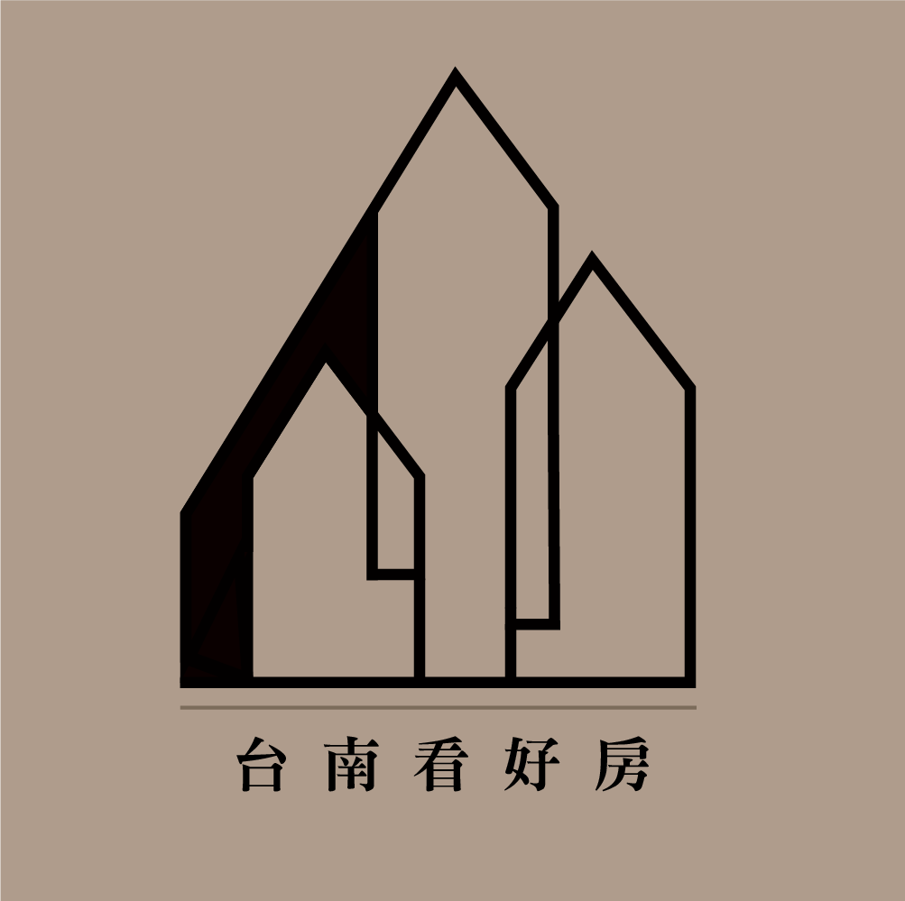

台南看好房
第 1 題：看房看多久了呢？
*(必填)
最近才剛開始看
已經看了一陣子了
第 2 題：偏好區域（最多選三個）
*(必填)
第 3 題：物件的種類（最多選兩個）
*(必填)
第 4 題：物件的用途類型（最多選兩個）
第 5 題：是否有車位需求
*(必填)
需求一車位（平面）
需求一車位（可接受機械）
需雙車位
不需要車位
第 6 題：自備款 (現金) 大約：(萬)
*(必填)
在銀行限貸的時代下，現金是買房"最重要"的指標，這樣小張才能匹配最適合的房子給您。
第 7 題：個人名下房屋與房貸狀況
備註：配合管制，第2間貸款最高5成、第3間最高3成。這將影響您的可貸成數。
名下無房
名下有房（無貸款）
名下有房（有房貸）
第 8 題：配偶名下狀況
未婚 / 配偶名下無房
配偶名下有房（無貸款）
配偶名下有房（有房貸）
第 9 題：若是大樓的話需要幾房呢？
*(必填)
我選透天
1房
2房
3房以上
第 10 題：希望的屋齡
*(必填)
6年內
10年內
15年內
20年內
21-35年內都可以
不在意屋齡，只要地點好
第 11 題：曾看過哪些房子有喜歡的呢？
第 12 題：有無比較注重的細節呢？
第 13 題：請留下您的聯絡資料
*(必填)
小張會根據需求篩選最符合的物件給您
個人資料保護協議：您所填入的資料僅授權
台南看好房 - 張英泓
本人查閱，僅用於聯絡與服務使用，不會有個資外洩之疑慮，請安心填寫。
上一步
下一步